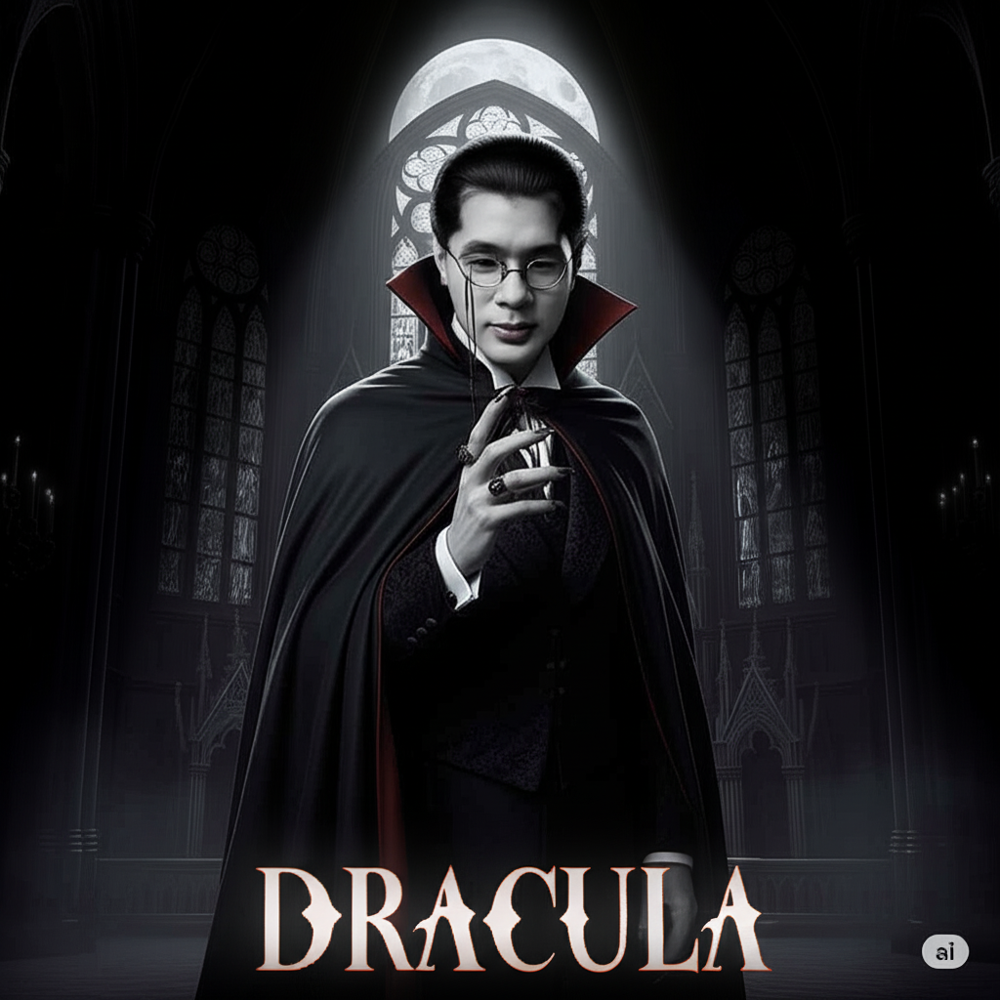

SEANMAN
Sean, seorang pemuda nelayan biasa, hidupnya berubah drastis saat ia menemukan trisula legendaris di reruntuhan kota bawah laut. Trisula itu memberinya kemampuan luar biasa: bernapas di dalam air, mengendalikan arus laut, dan memanggil kekuatan badai.
Namun, kekuatan besar itu membangkitkan musuh yang telah lama tidur: Leviathan, raja monster laut raksasa, dan pasukan bawah lautnya yang menyeramkan—penjaga laut gelap, hiu baja, dan siluman arus hitam. Mereka menganggap Sean sebagai ancaman bagi keseimbangan dunia bawah laut.
Dengan trisula di tangannya dan keberanian di dadanya, Sean harus bertarung untuk mempertahankan lautan, melindungi dunia atas, dan membuktikan bahwa pahlawan sejati bisa lahir dari tempat yang paling sederhana..

CHITATTO
Leon, pemuda keturunan Tionghoa yang tinggal di gang sempit Jakarta, hidup sederhana menjaga toko sembako kecil milik orang tuanya. Tapi segalanya berubah saat toko itu digusur demi pembangunan apartemen mewah. Dalam sekejap, Leon dan keluarganya jatuh miskin—tanpa toko, tanpa penghasilan.
Terdesak, Leon mulai dari nol. Ia mendorong gerobak keliling menjual sembako ke kampung-kampung, berjuang di tengah panas, hujan, dan ketidakadilan. Dianggap remeh, dipalak preman, bahkan dicurigai karena latar belakangnya—semua tidak mematahkan tekadnya.
Dengan kerja keras, hati yang tulus, dan dukungan warga yang mulai percaya padanya, Leon perlahan bangkit. Hingga akhirnya, dari jalanan yang keras itu, ia berhasil membangun toko sembako kecil miliknya sendiri. Sebuah toko yang bukan hanya menjual kebutuhan, tapi juga menjadi simbol perjuangan, keberagaman, dan harapan..

DRACULA
Mikel hanyalah manusia biasa—pemuda sederhana yang hidup tenang bersama kekasihnya, Valen. Tapi segalanya berubah saat Valen diserang oleh makhluk kegelapan dan terancam kehilangan nyawanya. Dalam keputusasaan, Mikel melakukan hal yang tak pernah dibayangkan: meminta pertolongan dari makhluk malam.
Dihadapkan pada pilihan mustahil—melihat Valen mati atau mengorbankan kemanusiaannya—Mikel memilih cinta. Ia menerima kutukan darah dan menjadi Dracula, raja kegelapan baru, demi menyelamatkan satu-satunya orang yang berarti baginya.
Namun cinta yang ia selamatkan kini terancam oleh bayang-bayang baru: para pemburu vampir, pengkhianatan dari sesama makhluk malam, dan sisi gelap dalam dirinya yang semakin sulit dikendalikan. Di antara cahaya dan kegelapan, Mikel harus bertanya:
Berapa harga cinta… jika harus kehilangan jiwanya sendiri?.

DREAMS
Daniel Ardiansyah adalah pemuda ambisius dari Indonesia yang punya mimpi besar: menjadi orang kaya dan menikah dengan wanita dari luar negeri. Dengan tekad kuat, Daniel berhasil mendapatkan beasiswa untuk kuliah di Oxford University, tempat ia yakin bisa meraih semua impiannya.
Namun, di kampus bergengsi itu, rencana Daniel berubah saat ia bertemu Karina Bluu, sesama mahasiswa Indonesia yang cerdas dan penuh semangat. Karina datang ke Oxford bukan hanya untuk belajar, tapi juga mengejar mimpi dan jati dirinya.
Awalnya Daniel terjebak dalam ambisinya sendiri dan mengabaikan kedekatannya dengan Karina. Tapi perlahan, ia mulai menyadari bahwa arti kesuksesan bukan hanya soal harta atau status, melainkan tentang menemukan seseorang yang bisa berjalan bersamanya melewati mimpi dan kenyataan.
"DREAMS" adalah cerita tentang perjalanan mengejar mimpi, cinta, dan penemuan jati diri di tengah dunia yang penuh tantangan dan harapan..